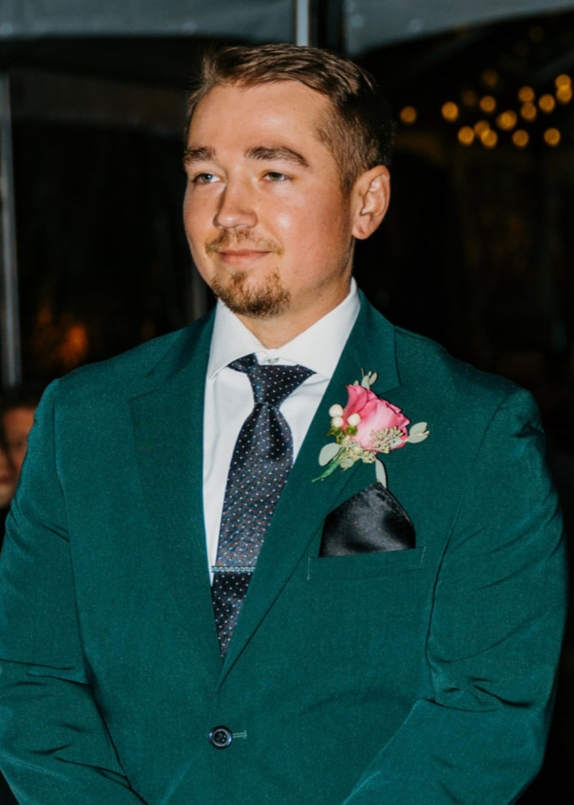

Neal Wiechman

Summary
I am a highly motivated individual to perform the best I can at any task.
I have strong communication, problem solving and teamwork skills.
Education
- Software Development, Cincinnati State (2023 - 2025)
-
Associate in Applied Science, Gateway Community & Tech. College
(2014-2016)
- Diploma for Computerized Machine Manufacturing (CMM)
-
Studying Business Administration, Northern Kentucky University
(2013-2014)
-
Studying Business Administration, Jefferson County Tech. College
(2011-2013)
Work Experience
- CNC Programmer/Mold Designer - OMNI Technologies
February 2024 - Present
-
Used SolidWorks to design a variety of molds, fixtures and machined
parts.
- Used SolidCAM to toolpath 3 and 4 axis CNC mills.
-
Used Microsoft Excel to quote molds and to query our database to show
inventory.
-
Maintained an accurate scheduling system to provide transparency
within the company.
-
Helped with Database Management and inserting BOM's from my design
into the database.
- CNC Setup/Operator - Metalex Mfg.
February 2023 - February 2024
-
Setup and operated a variety of large CNC machines, including:
- Makino, 3-5 axis mills
- Hermle, 5 axis mills
- Starrag 1600, 5 axis Mill-Turn
- Deckel Maho, 5 axis Mill-Turn
- DMG Mori Seiki, 5 axis Trunnion
-
Maintained tolerances as tight as +/-.0001", using dial indicators,
bridge gages, thermal gages, Micrometers and probes at the machine.
- Practiced 5s working standards.
- CNC Lead/Programmer - Jet Machine
January 2018 - February 2023
-
Lead programmer of 16, 3 axis CNC Mazak 510c mills and 2, 5 axis Mazak
Variaxis mills.
-
Job shop environment, with some jobs being ran as high production.
-
Used SolidWorks to sketch fixturing or model parts from print and
MasterCAM and Mazatrol to program the machines.
-
Created OVS (Operator Verification sheets) for operators to run my
programs and check parts to print.
-
Managed employee documents, scheduling and training information. I had
between 6-10 employees who reported to me each day.
Skills
- SolidWorks
- MasterCAM
- SolidCAM
- Microsoft Office products
- SQL
- Python
- VB.Net
- HTML
- Mazatrol, EIA programming
- Organization skills
- Communication, Teamwork skills
Awards and Certifications
- Apprentice Of The Year, Gateway Tech. College (2015)
- Mastercam 2D certificate (2020)
- Software Development, Cincinnati State (2025)
Other